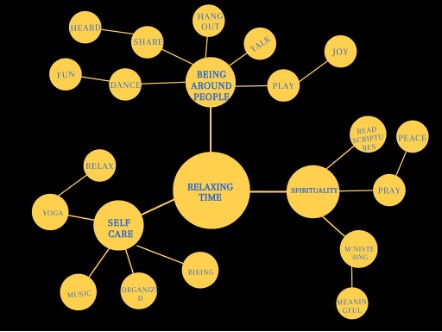
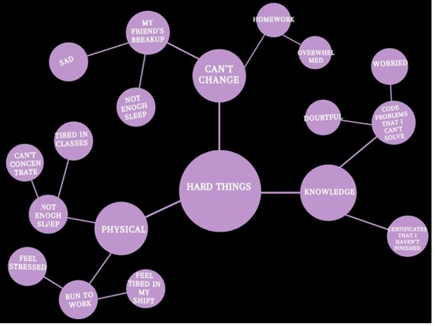
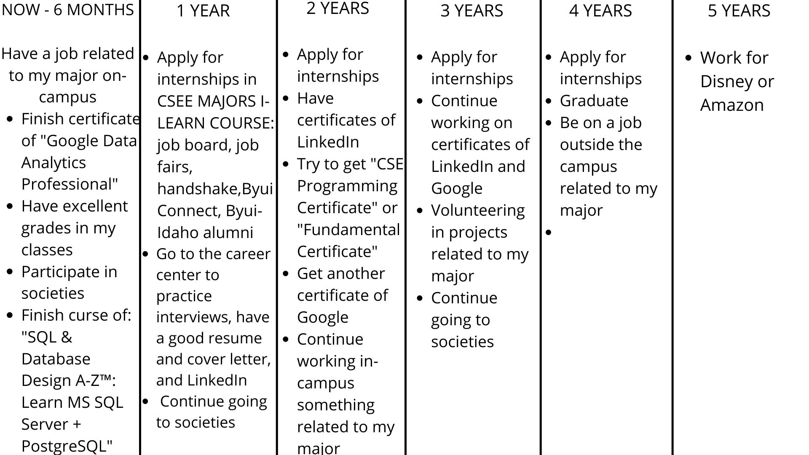
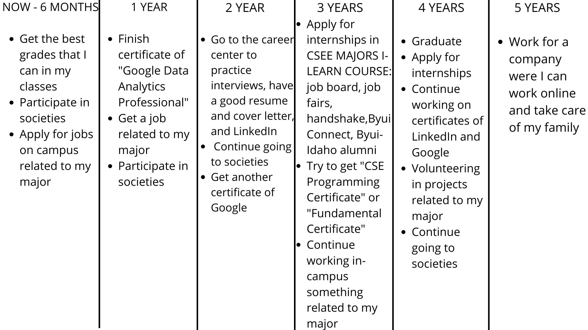

Definition: Health for me is being and feeling good in body, mind, and spirit.
Measure: ¾
Analysis: I need to sleep more and eat healthier
Summary: I need to organize my time better. If I do this during the week, I will have less homework and more time to cook.
Definition: Doing things that generate money.
Measure: ¾
Analysis: I need to apply for other jobs that help me learn more about my major.br
Summary: Send my resume and cover letter to jobs in-campus.
Definition: Do some things that you enjoy by yourself or with others
Measure: ¾
Analysis: I think I am doing very well in this one, but sometimes it can be time-consuming.
Summary: but I need to take more care of the time that I spend with them.
Definition: Take care of your beloved ones, friends, and others. Have a deep affection for them.
Measure: ¾
Analysis: I think I can serve more and take more care of others.
Summary: I can call my parents and siblings more.
Work is needed to cover human necessities and progress as a person. It can enable you to grow as a person and with your family, but if you don't take care of it could be an obstacle to your life goals. Work can be satisfactory because it could help you have a better life if you are paid for it. It could bring you joy or be a nightmare if you don't enjoy it. You can also help society while you work in different areas; if you do that, it can be more enjoyable and give you a feeling of completeness.
There is a God, and the purpose of life is that we can someday live with him and that we can progress and learn from our mistakes and have joy in our lifetime.
God gave us families to experience what it is like to have one. Also, to teach one another and learn good principles from them.
In this life, we will experience difficulties and trials because they are essential for us to learn to make good decisions and learn from our good and bad choices. Also, we are not alone on this earth. God is always there to help us, so we can find joy and reach our divine nature.
Energy:
Flow and engagement:
My dream job
Is time going to be enough to do all these things?
Do you have all the resources?
Is it going to be overwhelmed?
A nice job:
Is it achievable?
Do you have all the tools that you are going to need?
Is it well organized?
What I would love to learn

Is it sustainable?
Do you have the resources to do it?
Are you capable to do all these things?